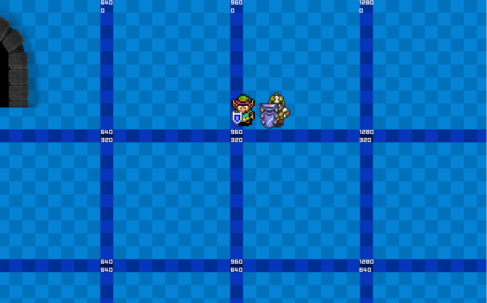
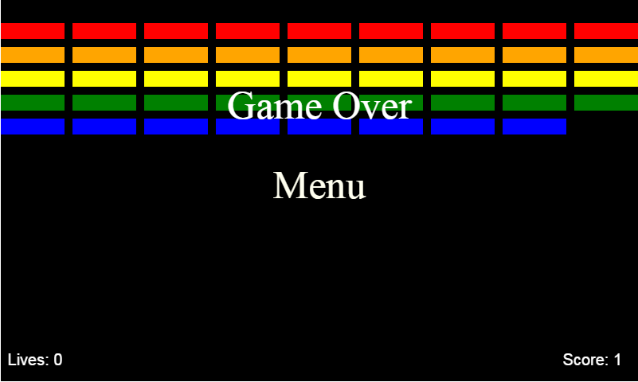
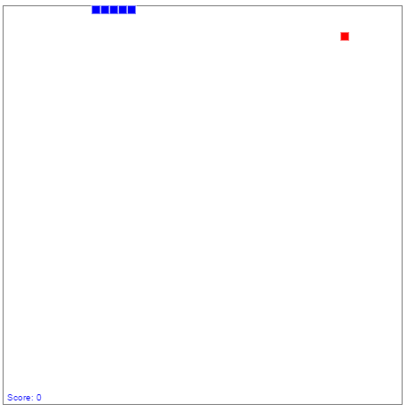

|
|
Currently in progress
My Final Year Project, and Thesis
This is still very very very much a work in Progress, but should be the jewel of my portfolio when it's finished, built using the Phaser framework, I envision this becoming a huge project, at present the feature I'm working on is to have doors that actually allow you to move from one area to another, all the assets currently in the game are tempory (especially When Doves Cry, since I think Prince isn't too fond of having his music online), completed features so far include loading all level data from prebuilt Json documents, meaning all the levels will be dynamic as opposed to created statically/programatically, ensuring that adding more levels and areas will be a pinch!, and having enemies that will chase you until you run a certain distance from them (that's "intelligent", right?)

Completed (or not currently in progress) Projects
Breakout Clone
Created during the Summer of 2015, only the singleplayer version of the game was fully completed, the collision detection is all handwritten and not as accurate as I would like, but it definity redeems itself in the fact that it undoubtedly is a complete game, with infinite (theroretically) levels, persistent scores, and a increase in difficulty as you go from level to level, I'm relatively happy with the finished product here! The music used is BitRush from the Arcade Riven skin release, and is owned by Riot Games

Snake
Created during the Summer of 2014, featuring no menus or actions beyond pointing a snake in a direction, it counts the score but doesn't persist between playthroughs, the snake growing looks really smooth and the game itself feels relatively satisfying to play, be warned though, the death sound effect is probably one of the most annoying sound effects I've ever used, the music used is Pushing Onwards from the VVVVVV soundtrack by Magnus Pålsson
